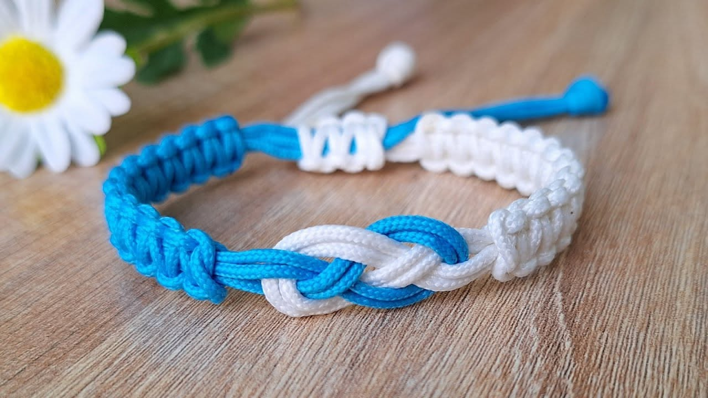

The Art of Macramé
Macramé is a millenary handmade technique that transforms simple strings and knots into art full of meaning. Each knot represents connection, union and strength. It is a reflection of the connections we build in life — intertwined, strong and unique.
Macramé is more than a decoration: it's time, dedication and care. Each piece is handmade, loaded with craftsmanship and human value. With Macramé, each creation is different. There are infinite possibilities in styles, colours and customisations. It's an art as unique as each person.
This is just the beginning of our journey. Follow the page and let's intertwine memories together.